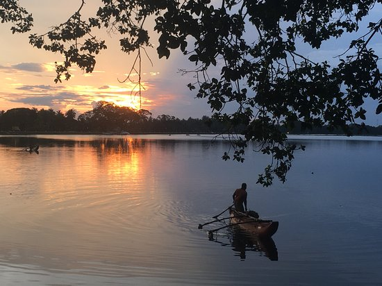
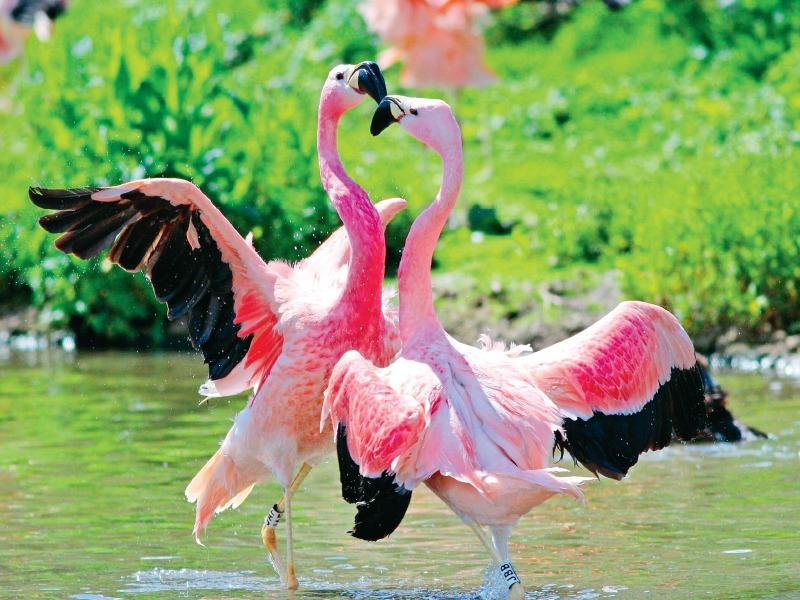
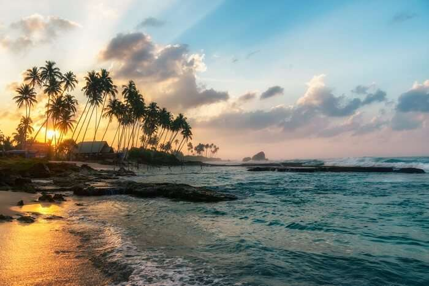
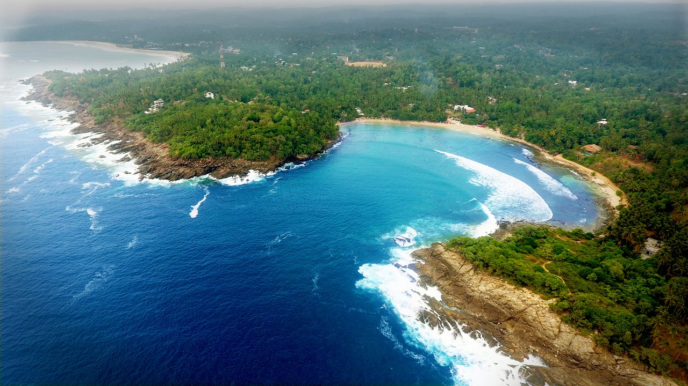

Welcome To The
" SOUTH..."
The Southern Province (Sinhala: දකුණු පළාත Dakuṇu Paḷāta, Tamil: தென் மாகாணம் Theṉ Mākāṇam) of Sri Lanka is one of the nine provinces
of Sri Lanka, the first level administrative division of the country. The provinces have existed since the 19th century but did not have any legal status
until 1987 when the 13th Amendment to the Constitution of Sri Lanka established provincial councils.[3][4] It is the 7th largest province by area and
is home to 2.5 million people, the 3rd most populated province. The province is bordered by Sabaragamuwa Province and Uva Province to the North, Eastern
Province to the Northeast, Western Province to the Northwest and the Indian Ocean to the South, West and East. The Province's capital is Galle.
Places to visit in Southern Province
Galle Fort
Galle Fort (Sinhala: ගාලු කොටුව), in the Bay of Galle on the southwest coast
of Sri Lanka, was built first in 1588 by the Portuguese, then extensively fortified by the Dutch during the 17th century from 1649 onwards.
It is a historical, archaeological and architectural heritage monument, which even after more than 432 years maintains a polished appearance,
due to extensive reconstruction work done by Archaeological Department of Sri Lanka.
Click here
to find out more.

Tissa Lake
Tissa Wewa is a reservoir in Tissamaharama, thought to have been constructed in the 3rd Century BC, either by Mahanaga of Ruhuna or his
successor Yatala Tissa of Ruhuna, in order to irrigate paddy lands and supply water to the flourishing city of Tissamaharama.
Click here
to find out more.

Bundala National Park
Bundala National Park is an internationally important wintering ground for migratory water birds in Sri Lanka. Bundala harbors 197 species of birds,
the highlight being the greater flamingo, which migrate in large flocks.[1] Bundala was designated a wildlife sanctuary in 1969 and redesignated
to a national park on 4 January 1993.[3] In 1991 Bundala became the first wetland to be declared as a Ramsar site in Sri Lanka. In 2005 the national
park was designated as a biosphere reserve by UNESCO, the fourth biosphere reserve in Sri Lanka.[4] The national park is situated 245 kilometres
(152 mi) southeast of Colombo.
Click here
to find out more.

Koggala
Koggala is one of the famous tourists’ attraction places in Sri Lanka. It is located on the southern coast of Sri Lanka. Visitors can enjoy the boat
trips in the lagoon and Koggala Lake to explore other tiny islands and the biodiversity around the Koggala site. Madol Duwa is one of seven islands
located on the Koggala Lake
Click here
to find out more.

Hiriketiya Beach
A small beach with great surfing, lots of greenery and some fine establishments for eats and hangs. Hiriketiya is one of those sleepy Southern
beaches that – after being ‘discovered’ by backpackers – is not so sleepy anymore. Locals can kick themselves for not finding it earlier, but
tourism also brings restaurants and hotels and things to do besides swim.
Click here
to find out more.